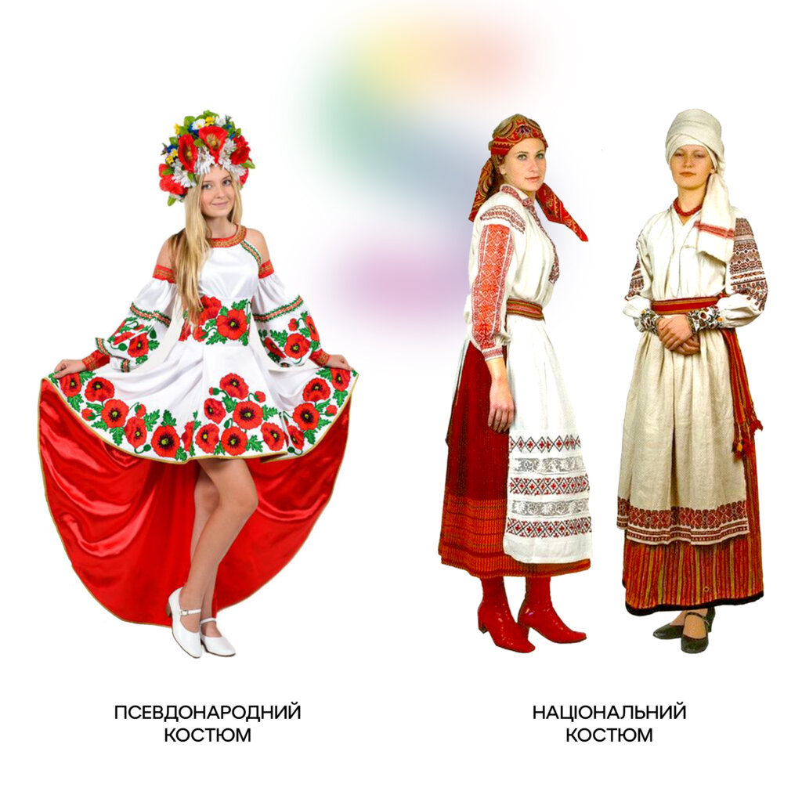
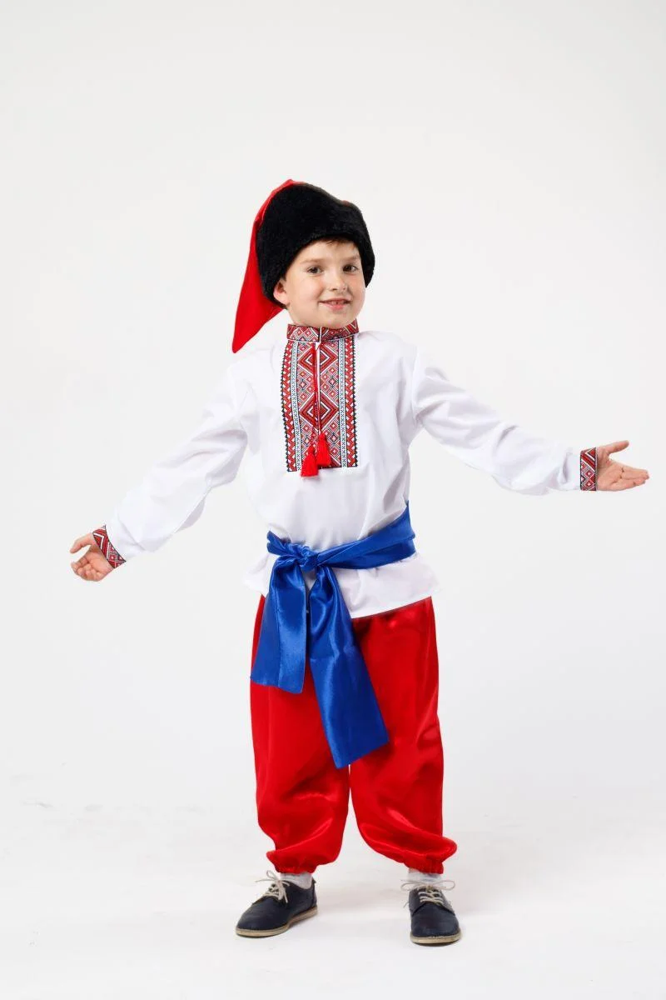

Існування українського національного одягу як окремої культурної одиниці історично було примарним страхом для Радянського Союзу впродовж усього його існування. Різноманітність одягу «братніх» народів, орнаментів, їхні значення радянське керівництво сприймало як потенційну загрозу ідеології. Носіїв етніки успішно ліквідовували.Наші східні сусіди й до сьогодні не змирились з існуванням української ідентичності, а разом із нею національного одягу. Їхні спроби знищити українські культурні коди в часи СРСР лиш посилили потребу вкоріненості. Аби її «втамувати», понад шістдесят років тому ідеологи Союзу запустили синтетичний процес, який ми сьогодні називаємо шароварщиною. Приблизно з цього моменту починає своє існування псевдокультура українців: калиново-маково-квіткові вишиванки для жінок та широкі червоні шаровари для чоловіків.
Часом найбільшого застосування шароварщини я вважаю період з 1991 р. Коли ми поновили власну державність і хапали все українське «як повітря після задухи», сформувався великий суспільний запит, закономірною відповіддю на нього стала штампована шароварщина. Причина очевидна — її довге нав’язування в тоталітарному СРСР, відсутність літератури, музеїв з освідченням цієї проблематики та, звісно, обмаль часу для пошуків справжньої ідентичності. Тому переходи, ринки і базари заполонила велика кількість дешевої беззмістовної продукції.
 За останні роки ситуація на українському культурному фронті змінилася на краще, утім, шароварництво досі існує. У його стійкості є декілька причин, серед яких:
Важливо під час спроб витіснення шароварщини не зробити з носіння вишиванок щось елітарне, не формувати уявлення, що вишиванка й етнічний одяг — це тільки для еліт. Важливо донести різницю між орнаментами, символами, оскільки ціновий сегмент різниться технікою виконання, а не відображеним на полотні. Тобто не буде достатньо припинити виробництво усіх неякісних продуктів етнічного походження. Підхід має бути комплексним. Постає питання: "Як відрізнити шароварщину від справжнього українського народного костюма?"